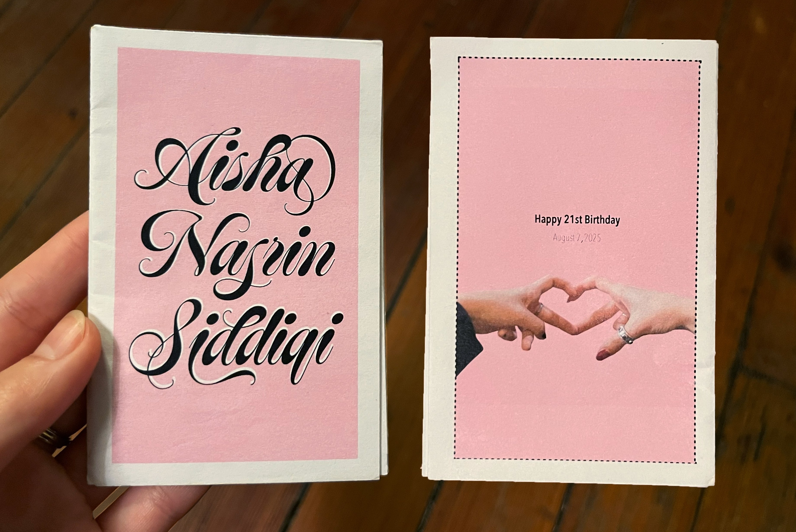
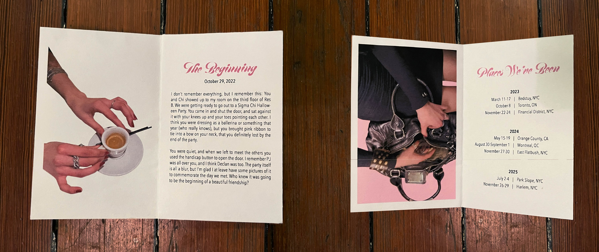
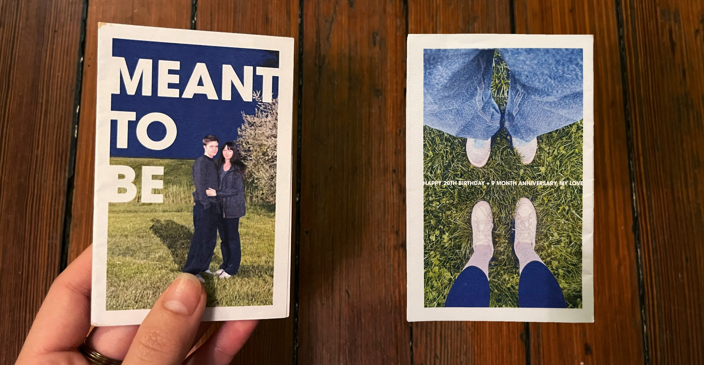
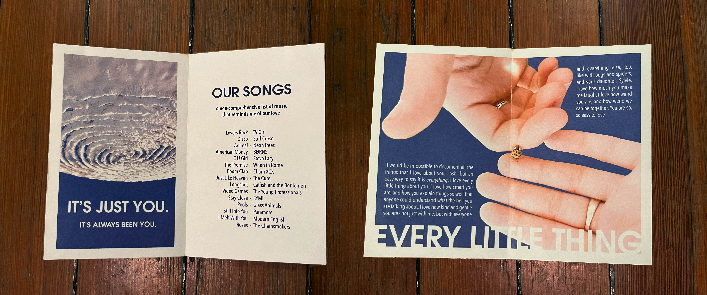
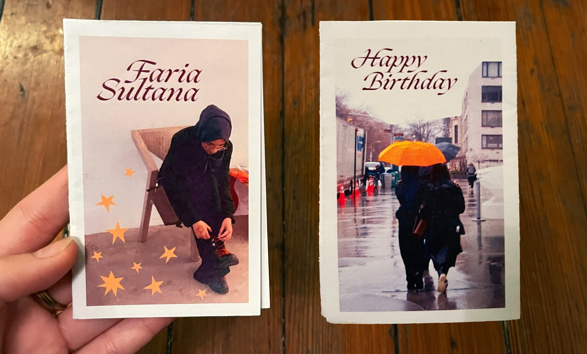
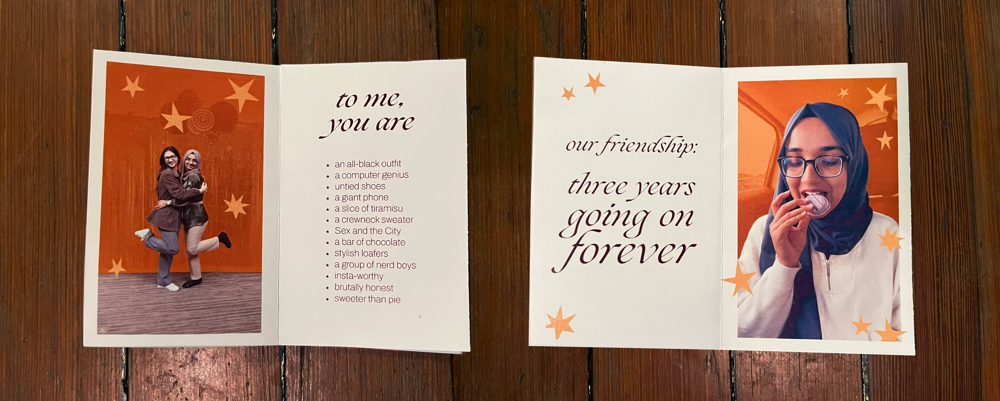

In recent months, I have taken to making my close friends celabratory zines for occasions such as anniversaries, birthdays, or reunions. Designing for such a small target audience allows me to make very specific and emotionally impactful creative choices surrounding color, type, and photography. I always end up having to use a different printer when these occasions come around. While the template for a zine remains pretty much the same, every printer has its quirks, which is part of why I design with a large border around each page (I also hate trimming). The negative space gives me just a little bit more leeway than I might usually have if I designed with a full bleed.





